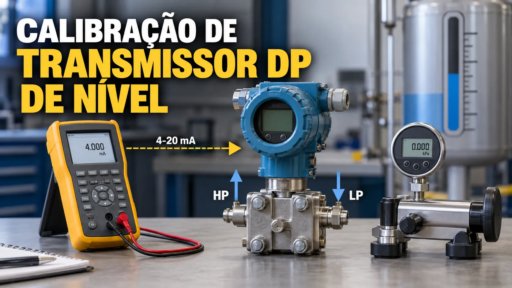

Calibração de Transmissor de Nível DP
Conteúdo técnico: ALOGY Engenharia · Atualizado em: 11/09/2026

A medição de nível por pressão diferencial transforma a coluna hidrostática em um range de DP. Na calibração, o ponto principal é confirmar se LRV e URV representam corretamente a instalação e se o transmissor converte o DP aplicado para 4–20 mA sem confundir erro da bancada com erro da saída.
O que LRV, URV e span representam
Span = URV − LRV
LRV negativo pode ocorrer em aplicações com elevação de zero. Também é possível encontrar ranges com condições particulares de instalação; por isso, a calibração deve partir da configuração/documentação real e não de um valor presumido.
A ferramenta de calibração usa LRV e URV informados. O cálculo detalhado desses limites, considerando geometria, densidade, perna molhada ou selo remoto, pertence à etapa de configuração da aplicação.
Tanque aberto e tanque fechado
Em tanque aberto, a superfície está normalmente exposta à pressão atmosférica e a coluna do lado de alta representa o nível. Em tanque fechado, a pressão do espaço de vapor deve ser considerada nos dois lados para permitir seu cancelamento; a linha de baixa passa a fazer parte crítica da medição.
- Perna seca: a linha de baixa deve permanecer sem acúmulo indevido de líquido.
- Perna molhada: a coluna de referência precisa permanecer preenchida e ser considerada no range.
- Selos remotos: fluido de enchimento, temperatura e elevação dos capilares influenciam zero e span.
As-found e as-left
Registre o as-found antes de zerar ou ajustar o transmissor. Depois de uma correção autorizada, repita os pontos e documente o as-left. Antes de culpar a eletrônica, confira manifold, linhas de impulso, perna de referência e condição real do processo.
Exemplo com elevação de zero
Considere LRV = −100 mbar e URV = 900 mbar. O span é 1.000 mbar. Para 50% de nível, o DP esperado é 400 mbar e, em saída linear, a corrente esperada é 12 mA.
Se a bancada aplicar 410 mbar, esse DP equivale a 51% do range e a corrente esperada passa a 12,16 mA. Se a corrente medida for 12,24 mA, o erro da saída deve ser comparado com 12,16 mA — não diretamente com 12 mA — para não atribuir ao transmissor o desvio da pressão aplicada.
Sequência de conferência
- Confirme TAG, unidade, LRV, URV, lado de alta e lado de baixa.
- Identifique tanque aberto/fechado, perna seca/molhada e presença de selos remotos.
- Isole, equalize e despressurize conforme procedimento e liberação operacional.
- Aplique os pontos de DP e registre o valor realmente aplicado e a corrente medida.
- Repita a sequência em descida quando o procedimento exigir.
- Antes de ajustar, verifique vazamentos, obstruções, condensado, bolhas, manifold e diferença de elevação.
Por que a densidade importa
A relação hidrostática básica é DP = ρ × g × h. Mudanças de densidade por composição ou temperatura alteram o DP produzido pela mesma altura. Uma calibração eletrônica correta não corrige automaticamente um range de engenharia calculado com densidade inadequada.
Ferramentas relacionadas
Referências para aprofundamento
- Emerson — documentação de medição de nível por pressão diferencial.
- BIPM/JCGM — Vocabulário Internacional de Metrologia.
Aviso técnico
Este material é informativo. Não substitui cálculo do range, levantamento de campo, procedimento de calibração, análise de risco ou manual do fabricante. Não intervenha em tanques, vasos ou linhas pressurizadas sem isolamento, liberação e condição segura definidos.